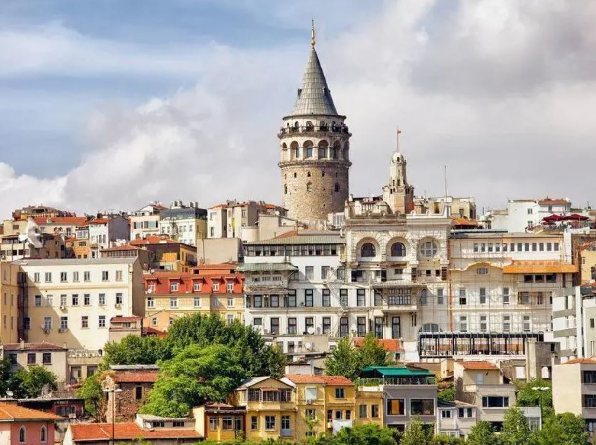

Galata Kulesi
Galata Kulesi Hakkında
Galata Kulesi Hakkında
Galata Kulesi ya da müze olarak kullanılmaya başlaması sonrasındaki adıyla Galata Kulesi Müzesi, Türkiye'nin İstanbul şehrinin Beyoğlu ilçesinde bulunan bir kuledir. Adını, bulunduğu Galata semtinden alır. Galata Surları dahilinde bir gözetleme kulesi olarak inşa edilen kule, farklı dönemlerde farklı amaçlarla kullanılmasının ardından günümüzde, bir sergi mekânı ve müze olarak hizmet verir. Hem Beyoğlu'nun hem de İstanbul'un sembol yapılarındandır.
Bizans İmparatorluğu ile ittifak hâlinde olan Cenevizliler 1267'de, Haliç'in kuzeyinde bulunan Galata'da "Pera" adlı bir koloni kurmuş, bu koloninin hâkimiyet alanını da zaman içinde Bizans tarafından verilen izinlerle genişletmişti. Tepesindeki haçtan ötürü o dönem "Kutsal Haç Kulesi" (Turris Sancte Crucis) olarak adlandırılan kule de, bu izinlere aykırı bir şekilde kuzeydoğu yönündeki tepeye doğru hâkimiyet alanı arttırılarak 1335-1349 yılları arasında bölgede yapılan tahkimatın bir parçası olarak inşa edildi. İki devlet arasında o yıl patlak veren savaş, ertesi yıl imzalanan antlaşmayla sona ererken kulenin bulunduğu tepe Ceneviz kontrolüne bırakıldı. Konstantinopolis'in 29 Mayıs 1453'te Osmanlı İmparatorluğu tarafından alınması sonrasında Pera'daki Cenevizliler, herhangi bir direniş göstermeden koloniyi Osmanlı'ya devretti. Kulenin de dâhil olduğu Galata'daki tahkimatta birtakım tahribatlar gerçekleştirilse de, Osmanlı Padişahı II. Mehmed'in fermanıyla kuledeki tahribatlar durduruldu ve tahrip edilen kısımlar yeniden inşa edildi. 1509'daki depremde hasar gören kule, 1510 itibarıyla onarıldı. 16. ve 17. yüzyıllarda, savaş esirlerini tutma yeri ve levazım ambarı, 18. yüzyıl itibarıyla Mehterhâne Ocağı ile yangın gözleyiciler tarafından bir yangın kulesi olarak kullanıldı.
1794'teki yangın sonrasında yapılan onarım çalışmalarında kulenin tasarımı değiştirilirken üst kısım bir kahvehaneye dönüştürüldü. 1831'deki yangın sonrasında tasarımı bir kez daha değiştirildi. 1875'teki bir fırtınada çatısının devrilmesinin ardından en üst katın üzerine kâgir iki ahşap kat çıkılarak bu kısım, şehirde çıkan yangınları gözleme ve haber verme amacıyla kullanılmaya başlandı. 1965-1967 yılları arasındaki restorasyon çalışmasıyla kule, katları farklı amaçlara hizmet eden turistik bir yapı olarak düzenlenirken kulenin çatısı da 1832-1876 yılları arasındaki tasarıma benzer şekilde yenilendi. Bu dönemde, Ünal Kardeşler ile sonrasındaki dönemde vârislerine ait şirket tarafından İstanbul Belediyesinden kiralanarak işletilmeye başlandı. 1999-2000 yıllarında dış cephesinde bir restorasyon yapıldı. 2013'te, İstanbul Büyükşehir Belediyesine bağlı BELTUR işletmeyi devraldı. Bu dönemde kulenin en üst iki katında birer kafe ile restoran yer almaktaydı. Aynı yıl, UNESCO tarafından Dünya Mirası Geçici Listesi'ne dâhil edildi. 2019'da mülkiyeti ve işletmesi Vakıflar Genel Müdürlüğüne geçti. 2020'de yapılan çalışmalar sonrasında kule, müze ve sergi mekânı olarak düzenlendi.
Çatısının ucuna kadar olan yüksekliği 62,59 m olan Romanesk tarzdaki kâgir kulenin silindirik gövdesi taştandır. Birer bodrum, zemin ve asma kat dâhil olmak üzere 11 katı bulunur. Zemin katla altıncı kat arasında asansör yer alırken, zemin kattan dördüncü kata kadar taş merdivenler, altıncı kattan sekizinci kata kadar ise çelik konstrüksiyon merdivenler yer alır. Tepesini kaplayan koni şeklindeki çatısı ise betonarmedir. Günümüzde kulenin zemin katı, bilet kontrol ve güvenlik noktası olarak hizmet verirken altıncı kata kadar ulaşan asansörün girişi de burada yer alır. Birinci kat müze mağazası iken sonraki üç kat sırasıyla Hezârfen Ahmed Çelebi'nin Galata Kulesi'nden süzülüşünün bir animasyonunun gösterildiği bir ekranla birlikte simülasyon alanı ile kulenin Takiyüddin tarafından kullanıldığı dönemini konu alan eserlerin; Kurtuluş Savaşı'na ait fotoğrafların; Galata Kulesi ve Surlarına ait bilgi ve eserlerin; Galata Kulesi ve İstanbul ile ilgili eserlerin yer aldığı kalıcı müze ve sergi alanlarıdır. Bir geçiş alanı niteliğindeki altıncı katın sonrasındaki geçici sergi alanı olan yedinci katta, İstanbul'un bir bölümünü gösteren bir maket ile pencere önlerine konumlanan seyir dürbünleri yer alırken sekizinci kat, bir seyir terası olarak düzenlenmiştir. Kulenin dış cephesi ile kuleyi çevreleyen alan ise bazı özel ve belirli günlerde farkındalık yaratma, anma ya da kutlama amacıyla kullanılır.